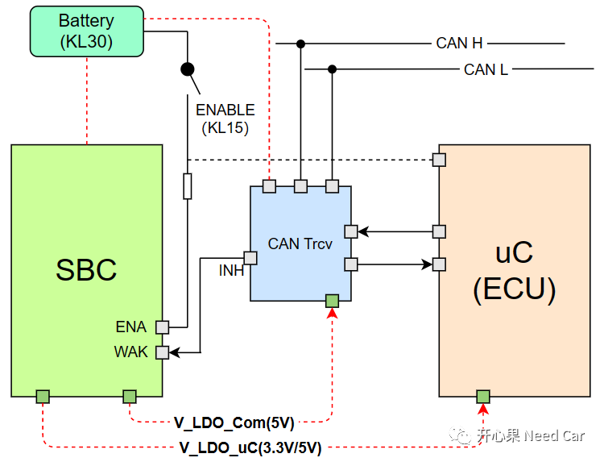
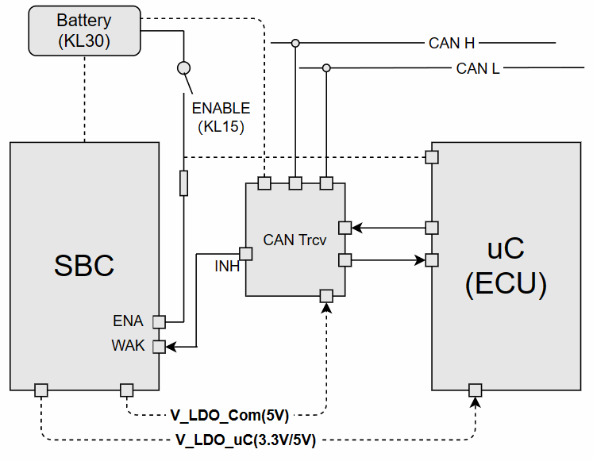
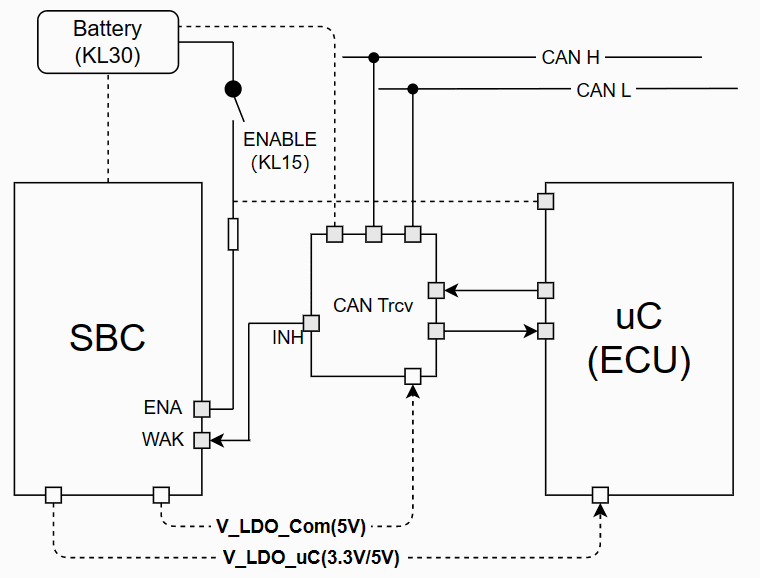
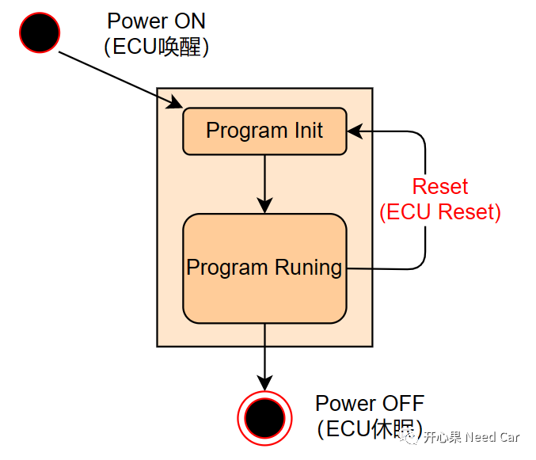

开心果 Need Car · 2023-02-02T06:47:00+08:00 · 微信原文
前面聊过ECU的启动、关闭流程，详情可以参考前文Autosar EcuM：ECU的启动、关闭流程。实际工程项目中，需要大量的人员参与其中，大家角色各异，对一些技术上的表达也可能各有不同。如果不同角色人员对某个概念理解不同，难免会造成沟通上的成本，即：未能真正捕获其意。这里举几个例子：
示例1：人员甲说：“ECU没有唤醒，没有CAN报文发送出来”
如何理解人员甲的表达？我之前强调过多次：ECU唤醒是网络唤醒的前提。所以，这里的人员甲是想说网络没有唤醒还是ECU没有唤醒？所以，这里准确说是网络没有被唤醒。
示例2：人员乙说：“ECU有电，没有报文发送出来，网络没休眠”
如何理解人员乙的表达？我们应该清楚，网络休眠是因为节点不想参与通信，停发报文是其最直接的表现。ECU有电，网络也可能休眠。eg：下电过程中，某些节点需要等网络休眠一段时间再进行ECU的Shutdown时序，这段时间内，ECU带电。
对于ECU和网络的关系，有时确实很迷糊人。本文，聚焦ECU的唤醒、休眠、Reset，看看是否和你的理解有所偏差？
1、ECU唤醒

（一）KL15唤醒ECU
如上图，SBC、CAN Trcv均与Battery（12V）常连。当KL15硬线使能以后，SBC的ENA Pin脚使能V_LDO_Com和V_LDO_uC电压输出，此时，CAN Trcv即可获取通信工作电压，一般是5V（Vcc）。同时，ECU获取3.3V或者5V电压，进而程序开始从复位向量位置运行，此时，ECU被唤醒。


2、ECU休眠
3、ECU Reset

对于Reset，有些是合理的，eg：诊断服务$10 02/82、$11 xx。有些是非预期的，eg：程序跑飞，没在规定时间"喂狗"等。但是，不管预期的Reset，还是非预期的Reset，均是想让程序回到最初状态，再来一遍。
往期精彩回顾